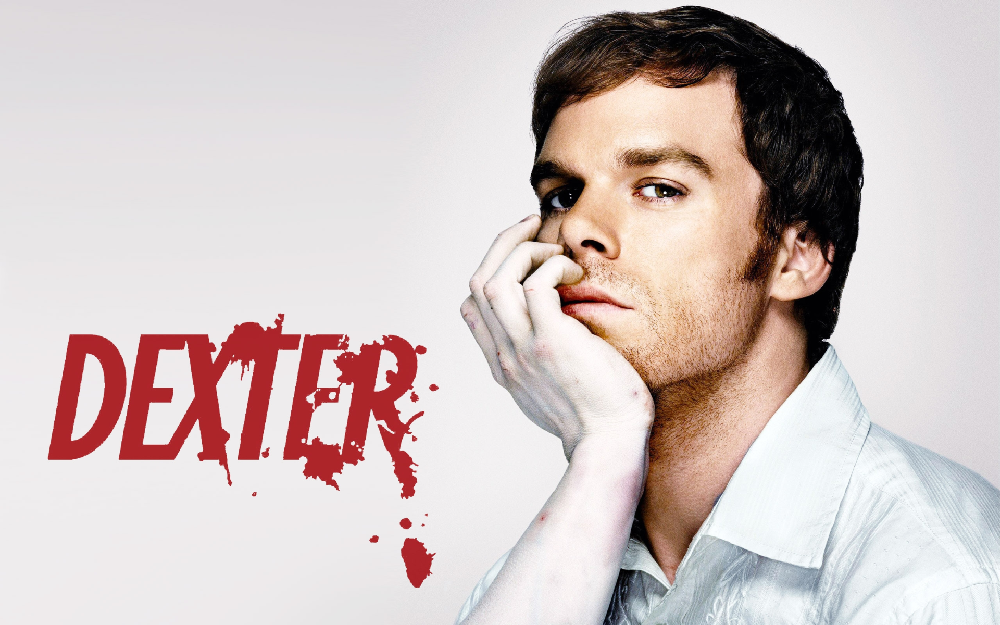

The Witcher
é uma série de fantasia épica que acompanha Geralt de Rívia, um bruxo mutante com poderes especiais, que é um caçador de monstros por profissão.
TrailerDexter
Dexter é uma série de televisão americana de drama policial e suspense que acompanha Dexter Morgan, um analista forense de padrões de sangue que também é um assassino em série.
TrailerYou
.jpg "You")
acompanha Joe Goldberg (Penn Badgley), um homem obsessivo que usa a internet e as redes sociais para se aproximar das mulheres que se torna apaixonado, muitas vezes culminando em crimes.
Trailer